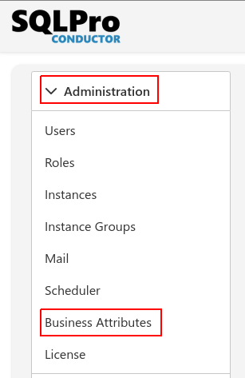
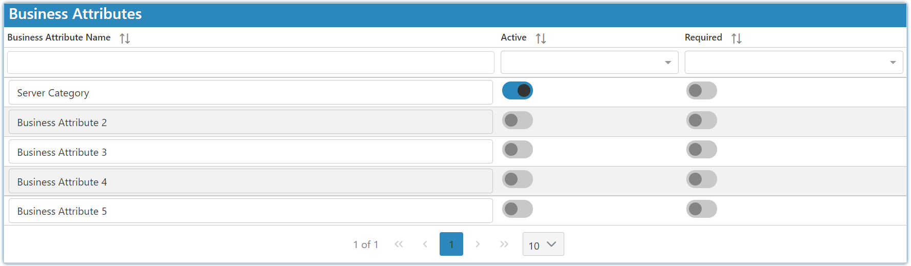

Introduction
Business attributes allow you to add additional information to your instances, which can be used as a filter when viewing the data in your instances.
To get started select the settings Icon and choose business attributes:

Note
You can customize the Attribute names by simply clicking on the name you want to change in the table shown below.

As an example: You can create a "Region" attribute and a "Store Type" attribute. Having your attribute set to active allows you to set those attributes when creating or editing an instance on the same screen. E.g. so you could set the "Region" as Durban and the "Store Type" as Butchery.